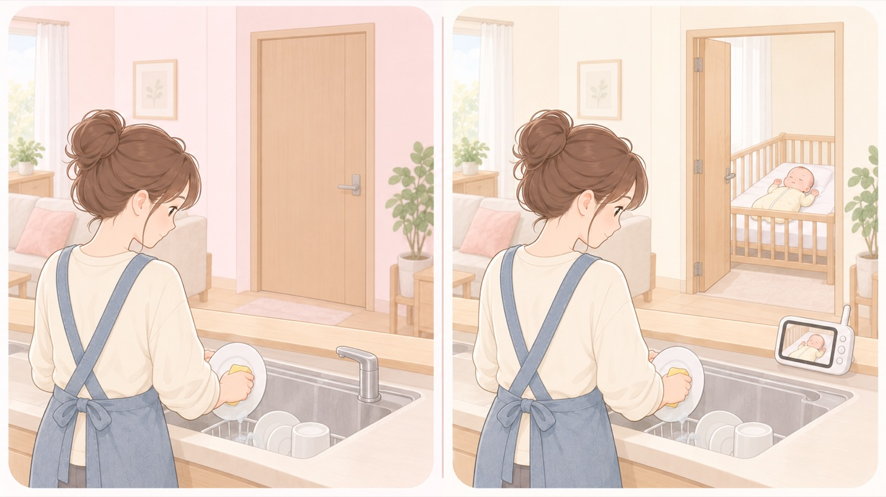

見守る
離れているあいだ、どう気づくか
まずはドアを開けて音が届く位置で。センサーは乳幼児突然死症候群を防ぐ装置ではない
家事や上の子の世話で、寝ている赤ちゃんから離れる時間は必ずあります。離れないことより、離れても気づける仕組みを作るほうが現実的です。モニターやセンサーは、気づくまでの時間を短くするための道具です。

- すること：寝室のドアを開けておく、音が届く位置で作業する
苦しがる物音、むせる音、いつもと違う泣き方は、ドアが開いていれば届きます。機器を買わずにでき、電池切れも誤報もありません。掃除機や換気扇を回すあいだは、見に行く間隔を短くします。 - すること：体動センサーは「異常に早く気づく」ための道具として使う
呼吸による体動が一定時間止まるとアラームが鳴ります。気づくまでの時間を短くできます。 - しないこと：センサーを着けたから安全、と考えない
体動センサーは乳幼児突然死症候群を予防する装置ではありません。予防法は確立しておらず、あおむけ寝・硬めの寝具・顔の周りに物を置かないという対策は、センサーの有無にかかわらず必要です。 - しないこと：誤報が続いても、電源を切ったままにしない
おむつのゆるみや装着位置で誤報が出ます。鳴らない状態に慣れてしまうのがいちばん危険です。
🛍 グッズの選び方
PR- ベビーモニターは、Wi-Fi設定が不要な専用機のほうが、設定の手間も、外部から覗かれる心配も少なくなります。暗い部屋で使うので暗視機能は必須です。
- ベビーセンサーには、おむつに留めるクリップ型と、布団の下に敷くマット型があります。寝返り前はクリップ型、寝返り後はマット型が外れにくくなります。
- 製品によっては、パッケージや販売ページに一般医療機器医薬品医療機器等法上の区分のひとつ。届出をして販売される、比較的リスクの低い医療機器。としての表示があります。表示の有無を確認して選びます。
- アラームが手元で鳴ること（親機がある、スマホに通知が来る）を確認します。本体だけで鳴る製品は、別室にいると気づけません。
- パナソニック ベビーモニター KX-HC705🏅 マザーズセレクション大賞2025（ベビーモニター／ベビーカメラ）Amazonで見る →（新しいタブで開きます）
- Sense-U ベビーセンサー（一般医療機器）🏅 第16回キッズデザイン賞 奨励賞（Sense-Uベビービデオカメラと体動センサ3）Amazonで見る →（新しいタブで開きます）
- ベビースマイル ベビーアラーム E-201（乳児用体動センサ）🏅 第18回キッズデザイン賞（同シリーズ 乳児用体動センサ ベビーアラーム E-202）Amazonで見る →（新しいタブで開きます）
- ベビーセンスホーム（マットレスの下に敷く非接触型・一般医療機器）🏥 病院・産後施設・保育施設で導入Amazonで見る →（新しいタブで開きます）
- Anker Eufy Baby Monitor C10アプリ連携。スマホからも見られるAmazonで見る →（新しいタブで開きます）
- Babysense ベビーモニター HDS2（Wi-Fi不要・モニター付き）Wi-Fi不要。ネットにつながずに使えるAmazonで見る →（新しいタブで開きます）
リンクはAmazonアソシエイトリンクです。当サイトはアフィリエイトプログラムに参加しています。Amazonのアソシエイトとして、当サイトは適格販売により収入を得ています。 選び方の方針
この項目の根拠
- 教育・保育施設等における事故防止及び事故発生時の対応のためのガイドライン（こども家庭庁）（新しいタブで開きます）
子どもの数・職員の数に合わせて定期的に呼吸・体位・睡眠状態を点検し、呼吸停止などの異常を早期に発見することで重大事故を防ぐ、という考え方。 - 赤ちゃんが安全に眠れるように ～1歳未満の赤ちゃんを育てるみなさまへ～（こども家庭庁）（新しいタブで開きます）
乳幼児突然死症候群の予防法は確立していないこと、あおむけ寝・硬めの寝具という基本の対策。